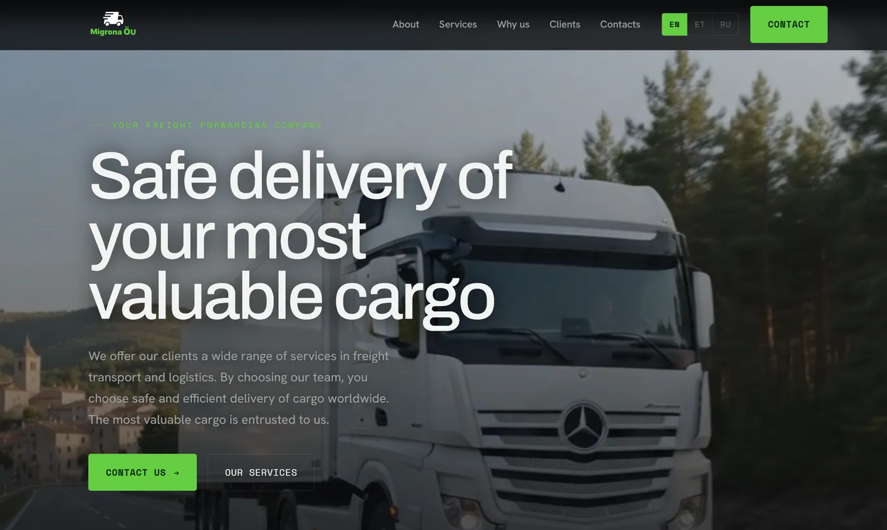

Тот же метод, без клиентов с улицы.
Ни карт, ни отзывов для сбора, ни импульсивных заказов. Покупатель сравнивает четырех экспедиторов по надежности и страхованию, прежде чем написать хоть одному. Восемь слоев, собранных в совсем другом порядке.

С чего все началось
Это тот проект в портфолио, который не похож на остальные, и именно поэтому он здесь. Четыре студии красоты и wellness можно было бы списать на один трюк, примененный четыре раза. Экспедирование снимает почти каждое допущение, на котором держатся те проекты.
Здесь нет клиентов с улицы и нет Гугл Бизнес Профиля (Google Мой Бизнес), который стоило бы оптимизировать. Никто не ставит пять звезд за паллету, приехавшую вовремя, - просто заказывают снова. Покупатель - логист или владелец бизнеса с грузом, который сравнивает трех-четырех экспедиторов по надежности, умению работать с документами и тому, застрахован ли груз. Решение принимается еще до того, как кто-то снимет трубку.
В B2B-логистике сайт - не продавец. Это проверка репутации, которую покупатель проводит, прежде чем вообще начать разговор.
Подход
Слой, на котором держится студия красоты, - локальный поиск - здесь почти ничего не стоит. Вперед выходят те слои, которые имеют значение: надежность, конкретика услуги и язык.
Услуги, описанные достаточно точно, чтобы их можно было оценить
Покупатель перевозок не ищет «логистику». Он ищет точную форму своей задачи, и размытая страница услуг дисквалифицирует экспедитора мгновенно. Поэтому каждая услуга стоит на собственных условиях:
- Международные автоперевозки - основная услуга, и именно ее должна сделать убедительной сеть маршрутов и хабов.
- Сборные грузы - частичные отправки, совсем другой покупатель, чем тот, кто берет целую фуру, с другой чувствительностью к цене.
- Негабаритные грузы - специализация, которая отличает способных экспедиторов от посредников, и запрос с наименьшей конкуренцией.
- Перевозка автомобилей - отдельный рынок со своей лексикой и своими страхами насчет повреждений в дороге.
- Таможенное оформление и документы - на балтийских маршрутах и маршрутах за пределы ЕС это часто единственная причина, по которой выбирают конкретного экспедитора.
- Страхование груза и складирование - вопросы, которые серьезный покупатель задает третьими, и именно они решают.
Доказательство - сеть хабов
Роттердам, Магдебург, Вильнюс и Киев - не украшение на странице контактов. Для покупателя этот список отвечает на единственный вопрос, который важен в начале: вы действительно перевезете мой груз по моему коридору или передадите его кому-то, кто сможет? Сеть подана как операционная возможность, а не как список адресов.
Английский - язык договора, эстонский - язык домашнего рынка и регулятора, русский - рабочий язык на значительной части коридора, который обслуживает эта компания. Для экспедитора языковое покрытие - не вежливость ради доступности, а сигнал о том, с кем вы действительно можете вести дела.
Доверие в версии для B2B
Проекты в сфере красоты отвечают на «будет ли больно и будет ли красиво». Этот отвечает на «что будет, если груз повредят, кто оформляет бумаги на границе и застрахованы ли вы». Тот же принцип - возражение идет на страницу, перед формой, - только возражения совсем другие.
Что было сделано
- Сайт и структура услуг - каждая транспортная услуга сделана находимой и достаточно конкретной, чтобы под нее выставили расчет.
- B2B-позиционирование - возможности и надежность на первом плане, потому что покупатель отбирает поставщика, а не рассматривает витрину.
- Многоязычная версия - английский, эстонский и русский, под то, как этот коридор работает на самом деле.
- Доверие и подтверждения - страхование, компетенция в таможне и сеть хабов, поданные как причины попасть в короткий список.
- Путь обращения - прямой путь к человеку, потому что обращение о перевозке - это разговор о конкретной отправке, а не форма записи.
Работающие слои
Обратите внимание, насколько этот список отличается от проектов студий. В этом и суть: система - это порядок действий, а не фиксированный пакет.
Результаты
В B2B-перевозках длинные циклы продаж и мало обращений, поэтому честные метрики здесь - качество обращений и позиции по запросам о конкретных услугах, а не трафик. Опубликую, когда истории наберется достаточно, чтобы она что-то значила.
Что дальше
Контент о коридорах и маршрутах - самая большая из оставшихся возможностей: страницы вокруг конкретных направлений, например Эстония - Нидерланды или Балтия - Украина, потому что именно так ищут спрос на перевозки. Дальше SEO на уровне услуг для негабарита и таможенного оформления, где конкуренция самая слабая, а покупатель настроен решительнее всего.
Если бы метод работал только для студий красоты в Познани и Праге, это была бы ниша, а не метод. Экспедирование не имеет ни одной общей внешней черты с теми проектами и все равно отзывается на ту же дисциплину: узнай, как на самом деле звучит спрос, построй под него структуру, отвечай на возражения до формы, и только потом думай о дизайне.
B2B, длинный цикл продаж, технический покупатель?
Сайт не закроет сделку. Он решает, попадете ли вы в короткий список, - а это более сложная половина.